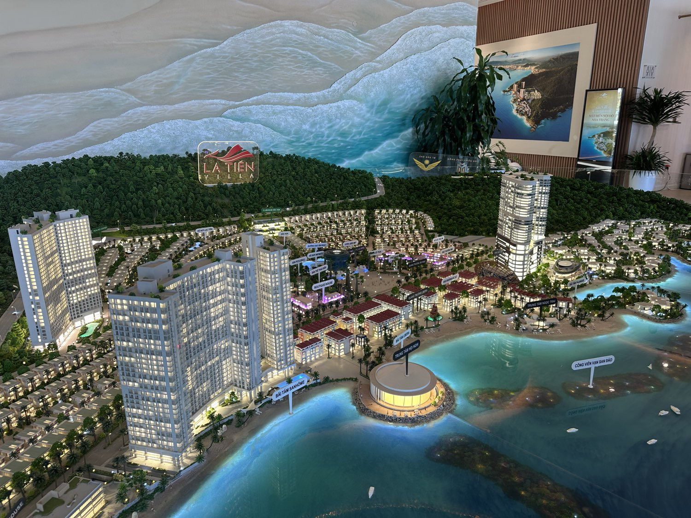

Vốn dự án tăng gấp đôi trên giấy: đọc tin "nghìn tỷ" thế nào để khỏi mua theo sóng
Tuần này có một con số dễ gây chú ý: vốn một khu đô thị ở Cam Ranh tăng gấp 2,27 lần chỉ qua một lần điều chỉnh trên giấy. Ngay cạnh tin đó, tôi tìm thấy một ví dụ cho thấy vì sao những con số “nghìn tỷ” cần đọc chậm lại trước khi tin.

Một con số vốn đăng ký lớn hơn không có nghĩa tiền đã chảy nhanh hơn.
Tin gốc: vốn tăng gấp 2,27 lần
HĐQT Vinhomes vừa thông qua việc nâng tổng vốn đầu tư của khu đô thị ven vịnh Cam Ranh (hơn 1.250 ha, phường Bắc Cam Ranh) từ khoảng 85.300 tỷ lên 194.000 tỷ đồng — tăng gấp 2,27 lần. Dự án có chủ trương từ tháng 4/2023, khởi công tháng 12/2025, và theo thông tin công bố, doanh thu dự kiến bắt đầu từ năm 2028.
Đây là một trong những dự án có vốn lớn nhất trong danh mục của Vinhomes tại khu vực, chỉ đứng sau vài dự án khác có vốn còn lớn hơn.
Một ví dụ đếm trùng, nằm ngay cạnh tin đó
Trong cùng đợt công bố, khu đô thị mới Cam Lâm — một dự án khác của Vinhomes tại Khánh Hòa — được ghi vốn 285.267 tỷ đồng. Con số này khiến tôi phải dừng lại, vì trước đó tôi có trong tay một con số khác cho cùng dự án: khoảng 260.267 tỷ đồng, chưa gồm khoảng 25.000 tỷ đồng chi phí bồi thường và tái định cư.
Cộng hai số lại: 260.267 + 25.000 = 285.267 tỷ — khớp chính xác với con số mới. Nghĩa là con số "285.267 tỷ" không phải một khoản tăng vốn mới, mà là cách gộp lại hai khoản vốn đã có từ trước thành một con số duy nhất. Đọc vội, người ta rất dễ tưởng đây là một đợt bơm vốn mới cho dự án.
Bộ lọc ba tầng, áp cho cả tin vốn
Tôi từng viết về một bộ lọc ba tầng cho một dự án hạ tầng: có tên trong quy hoạch → có mặt bằng → có tiền chạy. Với tin về vốn dự án bất động sản, tôi dùng một bộ lọc tương tự gồm ba câu hỏi:
- Đây là vốn đăng ký hay vốn đã giải ngân? Một con số HĐQT thông qua là vốn đăng ký trên giấy — không phải tiền đã thực sự đổ vào công trình.
- Con số này có bị cộng trùng với một khoản đã công bố trước đó không? Ví dụ Cam Lâm ở trên là một trường hợp cụ thể: hai con số cũ cộng lại thành một con số "mới", nhưng bản chất không có gì tăng thêm.
- Mốc doanh thu hoặc mốc bàn giao dự kiến là năm nào? Khu đô thị Cam Ranh ghi doanh thu dự kiến từ 2028 — tức còn vài năm nữa mới tới giai đoạn bán chính thức theo kế hoạch công bố.
Vì sao mốc "2028" lại là chi tiết quan trọng nhất
Một dự án có vốn đăng ký lớn, đã khởi công, nhưng doanh thu dự kiến còn cách vài năm — nghĩa là dự án đang ở giai đoạn xây dựng hạ tầng, chưa tới giai đoạn bán hàng chính thức theo kế hoạch của chủ đầu tư. Bất kỳ lời chào nào gắn mác "suất nội bộ" hay "giữ chỗ sớm" quanh một dự án như vậy đều cần được hỏi rất cụ thể: đang bán cái gì, theo hợp đồng gì, ai là người ký.
Con số vốn càng lớn, tin càng dễ lan nhanh — nhưng vốn lớn không đồng nghĩa với việc dự án gần tới ngày có sản phẩm bán ra thị trường.
Số liệu trong bài lấy từ thông tin công bố của Vinhomes và báo chí công khai (VnExpress, 1/10/2026), đến ngày 7/10/2026. Bài mang tính kiến thức chung về cách đọc tin vốn dự án, không khuyên mua hay nêu giá của bất kỳ sản phẩm cụ thể nào.
"Rồi, ngày mới tốt lành nhé."
Sống tử tế · Kiếm tiền hạnh phúc · Cho đi giá trị
Đang nghe chào một suất trong dự án đang xây dựng?
Gửi tôi tên dự án — tôi giúp anh chị tra lại mốc vốn, mốc bàn giao theo công bố gần nhất trước khi đặt cọc. Miễn phí.
Nhắn Zalo — 0869 668 638